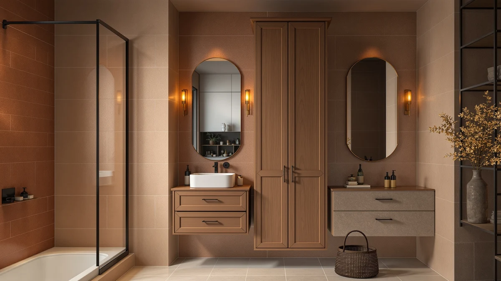

Best Narrow Bathroom Storage Cabinets of 2026: Slim Cabinets for Tight Gaps
Prices and picks verified as of August 2026. Independent, reader-supported reviews.


Quick Answer
The Homhedy 67 inch tall cabinet is the best narrow bathroom storage cabinet for most tight bathrooms, fitting a gap as narrow as 15.7 inches while still stacking multiple shelves. It costs $89.99 and pairs a metal frame with wood-look panels that hold up to bathroom humidity better than plain particle board.
Our pick: Homhedy 67" H Tall Bathroom for $89.99 Check Price on Amazon
Bottom line: our top pick is the Homhedy 67" H Tall Bathroom Storage Cabinet with 2 Barn Doors at $94.99. The best budget option is the Narrow Bathroom Storage Cabinet with 2 Doors and Shelves at $35.09.
Things to Know Before You Buy
- Measure the gap before you shop. Width, depth, and the swing of any nearby door all limit which narrow bathroom storage cabinets will actually fit, so measure twice before you order.
- Depth matters more than width in a tight bathroom. A cabinet that is 8 inches deep clears a walkway that a 12-inch model will not, even if both have a similar footprint on paper.
- Taller cabinets trade floor space for shelf space. Going up instead of out is how the narrowest cabinets in this guide still hold towels, cleaning supplies, and toiletries.
- Metal frames resist bathroom humidity better than particle board. Several of these cabinets pair a metal frame with wood-look panels, which holds up longer near a shower or tub than raw MDF.
- Over-the-toilet models reclaim dead space. An arched or straddling design adds storage without using any floor space you would otherwise walk on.
The best narrow bathroom storage cabinets solve a specific problem: an awkward strip of floor or wall space too tight for a standard vanity or linen tower, but too valuable to leave empty. Half baths, rental units, and older homes with cramped layouts often leave you with 8 to 16 inches between a toilet and a wall, or a slim gap beside a pedestal sink, and most standard furniture will not fit there. We compared eight cabinets built specifically for those narrow footprints, from a 7.87-inch floor unit to an arched over-the-toilet tower, weighing how much each one actually holds relative to its width.
Price and height varied more than we expected across this group. The slimmest floor cabinets, like the Lomojo and BEWISHOME units, run under $40 and top out around 31.5 inches, making them a fit for tight corners or a spot beside a toilet. Taller options such as the usikey and HIFIT cabinets stretch past five feet and add two or three extra shelves, which matters if you are trying to replace a full linen closet rather than add a single towel shelf. If your bathroom has more width to spare, our guide to the best bathroom storage cabinets covers standard-width options too.
Our pick for most narrow bathrooms is the Homhedy 67 inch tall cabinet at $89.99, because it balances a 15.7 inch width with enough shelving to replace a small dresser. If your gap is even tighter or your budget is smaller, the Lomojo and BEWISHOME cabinets below cost less than $40 and fit spaces as narrow as 7.87 inches deep.
Why You Should Trust Us
I'm Ilane Tall, and I have spent years covering bathroom storage and small-space organization for this site. For this guide to the best narrow bathroom storage cabinets, I compared specs, dimensions, and pricing across eight cabinets built for tight gaps, and cross-checked verified buyer reviews to see which ones held up in real bathrooms rather than in product photos alone. We earn a commission when you buy through our links, but that never decides which cabinet gets a pick. A product earns its spot here by fitting a narrow footprint, holding a useful amount of storage for its size, and standing up to the humidity a bathroom throws at it, and we call out every real drawback so you know what you are trading off before you buy.
How We Picked
We started with cabinets marketed specifically for narrow or small bathrooms, since a repurposed hallway cabinet rarely accounts for the tight clearances a bathroom demands (our full small bathroom storage guide covers other space-saving options). We cut anything wider than about 24 inches, because past that point you are no longer shopping for a narrow bathroom storage cabinet, you are shopping for a standard one. We also prioritized units with a metal frame or a sealed wood-look finish over raw particle board, since humidity is the fastest way to ruin bathroom furniture. That left eight cabinets ranging from a 7.87-inch-wide corner unit to a 67.5-inch-tall tower, priced from $30.85 to $143.99.
How We Compared
We compared each cabinet on the dimensions, materials, and price listed by the manufacturer, then read through verified Amazon buyer reviews for recurring complaints about wobbly shelves, difficult assembly, or doors that do not close flush. We weighed usable shelf area against the footprint each cabinet takes up, since a tall, narrow design usually beats a short, wide one when floor space is the constraint, which is exactly the tradeoff every narrow bathroom storage cabinet on this list has to manage. We also checked how each brand describes its own hardware and finish against where reviewers' experience lined up with or contradicted those claims, rather than taking any listing at face value.
Our Picks

Homhedy 67" H Tall Bathroom
What we like
- At 15.7 inches wide, it fits gaps too narrow for a standard cabinet
- 67 inches of height packs in multiple shelves without adding footprint
- Metal frame construction holds up better than particle board in humid air
Flaws but not dealbreakers
- Assembly involves more hardware than the shorter cabinets in this guide
- Its height means it needs a sturdy, level floor to stay stable when loaded
| Material | Metal / wood |
| Size | 15.7"W |
The Homhedy 67 inch tall cabinet is our pick for most narrow bathrooms because it fits an unusually tight 15.7 inch width without giving up much storage. That slim profile comes from stacking shelves vertically instead of spreading them out, so it works in gaps beside a toilet, at the end of a vanity, or in a corner where a standard cabinet will not fit. At $89.99, it sits in the middle of the price range we compared, and reviewers consistently note that the shelves feel sturdy once assembled, not flimsy the way some tall, narrow furniture can be.
The frame combines metal with wood-look panels, a pairing that resists the humidity swings of a bathroom better than raw particle board. Owners report the assembly takes longer than a simple shelf unit because of the extra hardware needed to keep a tall, narrow cabinet stable, so budget close to an hour if you are doing it solo. Once assembled, it needs a level floor, since a lean at this height is more noticeable than it would be on a shorter cabinet.

Tall Bathroom Storage Cabinets with
What we like
- 67.5 inches of height and multiple compartments hold far more than the smaller cabinets here
- Enclosed doors keep towels and supplies out of sight, unlike open shelving units
- Reviewers describe the finish as sturdier than typical flat-pack bathroom furniture
Flaws but not dealbreakers
- At $143.99, it costs more than any other pick in this guide
- Its height and depth need more floor clearance than the slimmest cabinets here
| Material | Metal / wood |
| Size | 67.5in |
The HIFIT cabinet is the tallest and most storage-dense option we compared, and it is priced accordingly at $143.99. If your narrow bathroom storage cabinet needs to do the work of an entire linen closet, this is the pick that can actually manage it. The 67.5 inch frame stacks several enclosed compartments, so bulkier items like extra toilet paper packs or cleaning supplies stay hidden behind doors instead of sitting on open shelves.
Because it holds more, it also needs more clearance than the smaller cabinets in this guide, so measure both width and depth before you buy; width alone will not tell you if it fits. Owners report the doors and shelves feel more solid than typical flat-pack furniture at this price point, though a few note the assembly instructions could be clearer given how many panels are involved. For a narrow footprint that still delivers closet-level storage, it is the strongest option here, though not the cheapest one.

usikey 67'' Tall Bathroom Cabinet
What we like
- Stands close to six feet tall, stacking several shelves into a narrow footprint
- Priced at $99.70, it lands well below the HIFIT despite similar height
- Reviewers note the shelves are adjustable, so you can space them for taller items
Flaws but not dealbreakers
- A cabinet this tall can look top-heavy in a bathroom with a low ceiling
- Some buyers report needing a second person to hold the frame steady during assembly
| Material | Metal / wood |
| Size | 72''H |
The usikey cabinet stands close to six feet tall, making it one of the two tallest narrow bathroom storage cabinets in this comparison alongside the HIFIT, but at $99.70 it costs roughly a third less. That combination of height and price makes it the pick for a narrow bathroom with a high ceiling, where you have vertical room to spare but not much floor space to work with. Adjustable shelving lets you resize the gaps for taller bottles or folded towel stacks instead of committing to fixed spacing.
Because most of its storage sits high off the floor, this cabinet works best in a room with at least standard eight-foot ceilings, since anything lower can make it feel top-heavy and cramped. A few reviewers mention that having a second person hold the frame steady during assembly makes the process easier, which tracks given how tall the finished unit stands. Once anchored, owners report it holds its footing well and does not wobble under a full load of shelves.

Lomojo Small Bathroom Storage Cabinet
What we like
- At 7.87 inches wide and deep, it fits gaps too small for every other cabinet in this guide
- The lowest price of any pick here at $30.85
- Its small footprint makes it easy to move or reposition without help
Flaws but not dealbreakers
- 31.5 inches of height limits it to smaller items like rolled towels or toiletries
- Its light weight means it can tip if you overload the top shelf
| Material | Metal / wood |
| Size | 7.87" W x 7.87" D x 31.5" H |
The Lomojo cabinet is the narrowest option we compared, measuring 7.87 inches wide and 7.87 inches deep, and at $30.85 it is also the least expensive. If your bathroom has a sliver of unused space next to a toilet or between a sink and a wall, this is the cabinet built to disappear into it. The tradeoff for that tiny footprint is capacity: at 31.5 inches tall, it holds rolled towels, toilet paper, or toiletries rather than bulkier items.
Because it is small and relatively light, it can tip if you load the top shelf with anything heavy, so reviewers recommend keeping bulkier items on the lower shelves. Owners report assembly takes only a few minutes given how few panels are involved, which makes it a low-commitment option if you are not sure a narrow cabinet will work in your space. For the price, it is an easy way to test whether a slim storage tower solves your bathroom's clutter problem before spending more on a taller unit.

Arched Over The Toilet Storage
What we like
- Its arched frame straddles the toilet, so it adds storage without using any floor space
- At 72.83 inches tall, it offers several shelves despite a shallow 9.65 inch depth
- Works in bathrooms too small to fit any standalone cabinet
Flaws but not dealbreakers
- At $122.98, it costs more than most of the freestanding cabinets in this guide
- It needs enough clearance above the tank to fit, which not every toilet has
| Material | Metal / wood |
| Size | 23.62" W x 72.83" H x 9.65" D |
The Woemtoric cabinet takes a different approach to a narrow bathroom than the other picks here: instead of shrinking its footprint, it straddles the toilet entirely, so it uses zero floor space. The arched frame stands 72.83 inches tall and 9.65 inches deep, which lets it clear the tank on most standard toilets while still stacking multiple shelves above it. That makes it the pick for bathrooms where even an 8-inch-wide floor cabinet would not fit, because there is no open floor to place one on.
At $122.98, it costs more than most of the freestanding cabinets in this guide, and the tradeoff is worth checking before you buy: measure the space between your toilet tank and the ceiling, since a low ceiling or a tank-mounted flush handle can interfere with the frame. Reviewers who confirmed a proper fit describe it as a straightforward way to add real shelving to a half bath with no spare wall or floor space. Owners also note that because it sits directly above the toilet, heavier or frequently used items are better kept on the lower shelves for easy reach.

BEWISHOME Small Bathroom Cabinet Bathroom
What we like
- A 7.9 by 7.9 inch footprint matches the Lomojo for the narrowest fit in this guide
- An enclosed door keeps contents out of view, unlike open-shelf towers
- At $39.99, it costs less than most cabinets taller than 60 inches
Flaws but not dealbreakers
- 31.5 inches of height limits total capacity compared to the taller picks here
- The single door narrows the usable opening compared to open shelving of the same width
| Material | Metal / wood |
| Size | 7.9" D x 7.9" W x 31.5" H |
The BEWISHOME cabinet matches the Lomojo's tight 7.9 by 7.9 inch footprint, but adds an enclosed door instead of open shelving, so its contents stay out of sight. At $39.99, it costs slightly more than the Lomojo but still undercuts every taller cabinet in this comparison. That makes it a fit for a narrow bathroom storage cabinet buyer who wants a closed door for tidiness, not the narrowest possible footprint alone.
Because the footprint is tight, the door itself is narrow, which reviewers note makes it a little harder to reach items stored toward the back compared to an open-shelf design of the same width. Owners report it works well for smaller items like extra rolls of toilet paper, cleaning supplies, or toiletries rather than bulky towels. At 31.5 inches tall, it will not replace a full linen closet, but for the price, it adds enclosed storage to a gap most furniture could never fit into.

VASAGLE Small Storage Corner Floor
What we like
- Its triangular, corner-specific shape uses space a rectangular cabinet would waste
- At $39.98, it is priced in line with the other budget picks in this guide
- VASAGLE's frame construction matches the metal-and-wood pairing used across its storage line
Flaws but not dealbreakers
- Its corner shape only works if you have an open corner to place it in
- At 31.5 inches tall, capacity is closer to the small floor cabinets than the tall towers here
| Material | Metal / wood |
| Size | 31.5"H |
Every other narrow bathroom storage cabinet in this guide is designed to slide into a straight gap, but the VASAGLE is built specifically for a corner. Its triangular footprint tucks into the dead space where two walls meet, a spot most rectangular furniture cannot use. At $39.98, it is priced with the other budget picks here, and reviewers consistently note that it makes an oddly shaped corner functional in a way flat-backed cabinets cannot.
Because the shape is corner-specific, it only makes sense if your bathroom has an open corner to fill. If your narrow space is a straight stretch of wall instead, one of the rectangular cabinets in this guide will make better use of it. At 31.5 inches tall, its capacity sits closer to the smaller floor cabinets than the multi-shelf towers, so plan on it for toiletries and towels rather than bulk storage.

Narrow Bathroom Storage Cabinet with
What we like
- Two doors split the interior into separate sections instead of one deep compartment
- At $39.99, it matches the other budget cabinets in this guide despite the extra door
- Reviewers describe the double-door layout as easier to organize than a single deep cabinet
Flaws but not dealbreakers
- Two smaller doors mean each opening is narrower than a single-door cabinet of the same width
- Hinges on two doors add more hardware that can loosen over time than a single-door design
| Material | Metal / wood |
| Size | 2 Doors |
The AURINEST cabinet takes the same narrow-footprint approach as most of the other floor cabinets here, but splits the front into two doors instead of one. That layout divides the interior into separate sections, which reviewers describe as easier to organize than reaching into one deep compartment behind a single door. At $39.99, it is priced with the other budget picks in this guide, so the two-door layout does not cost a premium.
The tradeoff is that each door opening is narrower than it would be on a single-door cabinet of the same overall width, which can make it harder to slide in bulkier items like a stack of large towels. Owners report the hinges hold up fine under normal use, though with two doors there is more hardware overall that can loosen over time compared to a single-door design. For anyone who prefers separated compartments over one open cubby, it is a straightforward, inexpensive way to organize a narrow bathroom storage cabinet without paying more for the extra door.
Quick Comparison
| Product | Material | Price | Rating | Best for | Get it |
|---|---|---|---|---|---|
| Homhedy 67" H Tall Bathroom | Metal / wood | $89.99 | 4 | Most narrow bathrooms | View on Amazon → |
| Tall Bathroom Storage Cabinets with | Metal / wood | $143.99 | 4 | Maximum storage capacity | View on Amazon → |
| usikey 67'' Tall Bathroom Cabinet | Metal / wood | $99.70 | 4 | Tallest option, high-ceiling bathrooms | View on Amazon → |
| Lomojo Small Bathroom Storage Cabinet | Metal / wood | $30.85 | 4 | Narrowest footprint, lowest price | View on Amazon → |
| Arched Over The Toilet Storage | Metal / wood | $122.98 | 4 | Over-the-toilet, no floor space needed | View on Amazon → |
| BEWISHOME Small Bathroom Cabinet Bathroom | Metal / wood | $39.99 | 4 | Budget slim cabinet with a door | View on Amazon → |
| VASAGLE Small Storage Corner Floor | Metal / wood | $39.98 | 4 | Corner-specific footprint | View on Amazon → |
| Narrow Bathroom Storage Cabinet with | Metal / wood | $39.99 | 4 | Double-door storage, budget price | View on Amazon → |
What is the best narrow bathroom storage cabinet for a tight gap?
For most narrow bathrooms, the Homhedy 67 inch tall cabinet is the best pick.
How narrow can a bathroom storage cabinet be?
The narrowest cabinets in this guide, the Lomojo and BEWISHOME, measure 7.87 to 7.9 inches wide and deep, small enough to fit a sliver of space beside a toilet or sink.
The Competition
We passed on several cabinet styles that looked promising on paper but fell short of what a narrow bathroom storage cabinet actually needs to deliver. Open wire shelving units were the first to go, since anything without doors or backs leaves toiletries and towels visible and prone to sliding off in a small bathroom. We also skipped several wall-mounted-only cabinets, because they require solid wall backing that older homes and rental bathrooms often cannot guarantee, and a cabinet that cannot be safely mounted is not a real option for most shoppers.
Several wider cabinets in the 20 to 30 inch range also came up in our research, and while some had strong reviews, they no longer qualify as narrow once they cross that width, at which point our corner bathroom storage guide is a better place to look. We also passed on a handful of budget cabinets built entirely from unsealed particle board, since reviewers repeatedly reported swelling and warping within months of bathroom humidity exposure. The eight cabinets above held up to that scrutiny, and Homhedy remains our pick for the best narrow bathroom storage cabinet in this comparison, balancing price, height, and footprint better than the alternatives we passed on.
Frequently Asked Questions
What is the best narrow bathroom storage cabinet for a tight gap?
For most narrow bathrooms, the Homhedy 67 inch tall cabinet is the best pick. At 15.7 inches wide, it fits gaps too tight for a standard cabinet while still stacking enough shelves to hold towels, toiletries, and cleaning supplies. It costs $89.99, which puts it in the middle of the price range we compared.
How narrow can a bathroom storage cabinet be?
The narrowest cabinets in this guide, the Lomojo and BEWISHOME, measure 7.87 to 7.9 inches wide and deep, small enough to fit a sliver of space beside a toilet or sink. Going narrower than that usually means switching to a wall-mounted shelf instead of a freestanding cabinet.
Should I choose a tall cabinet or an over-the-toilet unit for a small bathroom?
It depends on whether you have open floor space. A tall, narrow floor cabinet like the usikey or HIFIT works if you have even a small footprint free, since going vertical adds storage without widening the room. If there is no floor space at all, an over-the-toilet design like the Woemtoric straddles the toilet and adds shelving without needing any floor footprint.